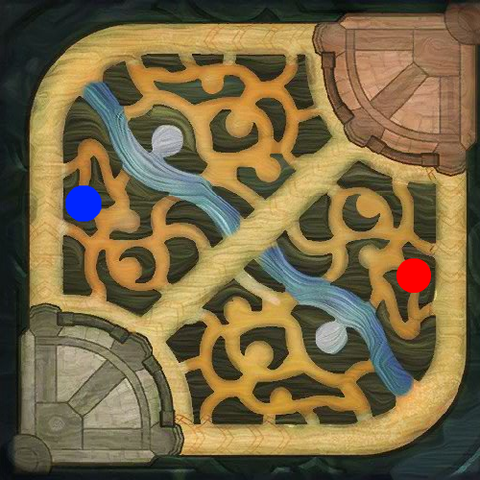
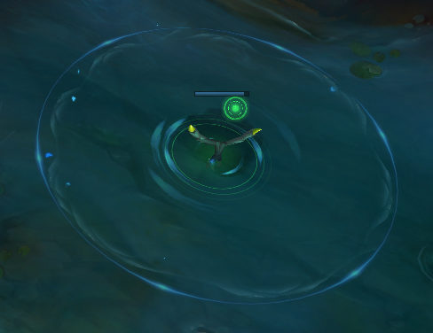
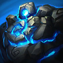
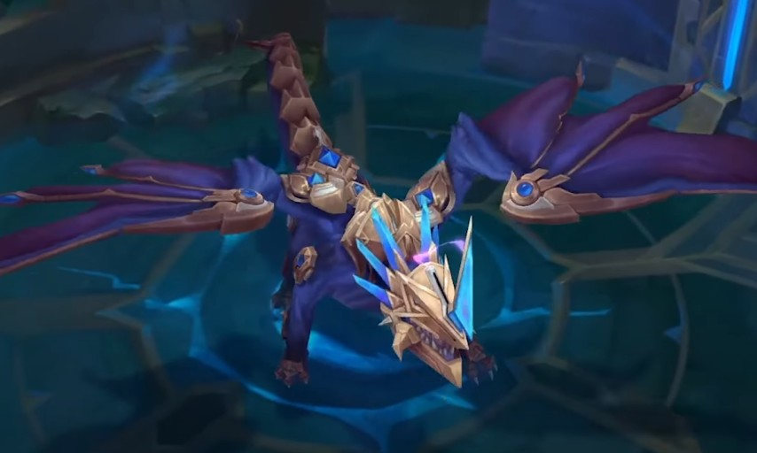

소환사의 협곡
소환사의 협곡(Summurnor's Lift)는 리그오브레전드의 가장 대표적인 맵이자 기본 맵이다.
각 다섯 명의 챔피언으로 두 팀을 구성하여, 세 갈래 공격로와 넓은 정글을 오가며 교전을 펼치게 된다. 공격로 대치 단계가 길고, 소규모 교전이 잦으며, 대규모 팀간 전투가 벌어지는 것이 소환사의 협곡의 특징이다.
소환사의 협곡의 맵은 공격로가 3방향이다.
위로 뻗는 구간은 탑(Top),
가로지르는 구간은 미드(Mid),
아래로 뻗는 구간은 바텀(Bottom),
탑과 미드, 바텀사이의 공간을
자유자재로 움직이는 정글(Jungle)이 있다.
<주 라인>
- 아이콘을 클릭하면 특성이 나옵니다.
<구조물>
이러한 각 라인에서 중심점 대칭으로 같은 구조물(넥서스, 억제기, 포탑)들이 존재한다. 이 구조물들은 공격로 상에서만 존재하며, 정글과 같은 중립지역에는 존재하지 않는다.
- 버튼을 클릭하면 설명이 나옵니다.
<몬스터>
구조물이 없는 정글같은 경우, 포탑이나 미니언에게서 보호받지도 간섭받지도 않는 중립 영역이다.
정글 몬스터를 비롯한 오브젝트를 취해 게임을 보다 유리하게 풀어 나갈 수 있다.
양 팀이 공평하게 파밍할 수 있도록 맵의 양쪽에 대칭으로 존재하며, 같은 종류의 몬스터끼리 모인 좁은 지형을 '캠프'라고 한다.
정글에서 몬스터들은 종류에 따라 일반, 버프, 에픽 몬스터로 나눌 수 있다.
일반 몬스터는 평범하게 돈과 경험치를 주는 몬스터이다.
핏빛 칼날부리
-칼날부리 위치-
-칼날부리 일러스트-
칼날부리는 대형 몬스터인 핏빛 칼날부리와 소형 몬스터인 칼날부리로 이루어져 있다.
핏빛 칼날부리는 '재생의 문장'을 가져서 처치한 챔피언의 체력과 마나를 소량 회복시킨다.
핏빛 칼날부리 1마리와 칼날부리 5마리로 총 6마리로 이루어져있는 몬스터이기 때문에,
주로 광역기가 좋은 챔피언을 쓰는게 칼날부리 캠프를 공략할 때 적합하다.
<인게임 칼날부리의 모습>
어스름 늑대
-어스름 늑대 위치-
-어스름 늑대 일러스트-
어스름 늑대는 머리가 두개 달린 큰 어스름 늑대와 작은늑대 두 마리로 이루어져 있다.
근접 공격을 하며 이동속도가 빠르지만 체력과 방어력이 낮기 때문에 쉽게 잡을 수 있는 몬스터.
잡기 쉬운만큼 보상도 낮고, 캠프 위치 상 안쪽에 있기 때문에 인기가없는 정글 캠프이다.
<인게임 어스름 늑대의 모습>
고대 돌거북
-고대 돌거북 위치-
-고대 돌거북 일러스트-
통칭 돌거북, 작골, 돌골렘 등으로도 불린다.
생김새처럼 근접 공격을 하며 나름 높은 체력을 갖고 있다.
고대 돌거북은 고대 돌거북과 돌거북 한마리씩 총 두마리로 되어 있는데, 고대 돌거북을 죽이면
고대 돌거북은 돌거북 2마리로, 돌거북은 작은 돌거북 2마리로 분열한다.
분열하는데 걸리는 시간이 있기 때문에 정글링 속도가 느려지는 원인 중 하나이기에 많은 경험치와 골드를 줌에도 자주 잡지 않는 몬스터이다.
<인게임 고대 돌거북 모습>
심술 두꺼비

-심술 두꺼비 위치-
-심술 두꺼비 일러스트-
심술 두꺼비는 독두꺼비 내지는 두꺼비로 더 많이 불린다.
원거리 공격을 하며 에픽 몬스터들을 제외한 일반 정글 몬스터들 중에서는 유일하게 마법피해를 입힌다.
단일 몬스터에 원거리라 카이팅 정글링에 가장 영향이 적은 캠프이기도 하다.
극초반에는 칼날부리와 더불어 강력한 정글 몬스터이며, 피관리가 필요한 정글러들은 강타가 강제된다.
<인게임 심술 두꺼비 모습>
협곡 바위게
-협곡 바위게 위치-
-협곡 바위게 일러스트-
협곡 바위게는 2015년 프리시즌에 추가된 몬스터이다.
흔히 강이라고 부르는 드래곤 앞과 내셔 남작 앞을 배회한다.
다른 정글 몬스터들과는 달리 평화주의자 컨셉이기에 공격을 전혀 하지않고 공격을 당하면 도망간다.
처치 시 보상이 높은 편이고 강쪽 시야를 장악할 수 있다는 운영적인 이점까지 제공하기 때문에 초반에 바위게를 두고
양 팀간의 소규모 교전이 빈번하게 일어난다.

바위게 처치 시 보상
(속도의 성소)
협곡 바위게를 처치하면 강 중앙에 속도의 성소가 생성된다.
속도의 성소는 대상으로 지정할 수 없는 와드 판정이며, 60초 동안 아군의 이동속도를 증가시켜 주고 해당 지역의 시야를 제공한다.
강 중앙에 속도의 성소가 생성되면, 상대방의 동선을 감시하기에 용이하게 만들어준다.
적 정글이 다른 라인에 간섭하려면 강 중앙을 건너야하는데, 속도의 성소가 있으면 위치가 발각되거나,
발각되지 않게 하기위해 동선을 돌아가야 하므로 시간싸움에서 우위를 가져올 수 있다.
이러한 이점들 덕분에 초반 바위게싸움이 치열한 이유다.
<인게임 협곡 바위게 모습>
버프 몬스터는 일명 블루와 레드
버프 몬스터를 처치하면 처치한 챔피언이 해당 버프를 받아서 일정시간 갖고있게 됨
버프들은 초반에 정글링의 핵심이며, 후반에는 딜러들의 능력치를 올려주는 게임에 큰 영향을 미치는 변수이기 때문에 이 몬스터들을 제대로 관리할 필요가 있다.
푸른 파수꾼
-푸른 파수꾼 위치-

-푸른 파수꾼 일러스트-
통칭 블루
초반에 스킬 위주 정글러들이 돌 때 큰 도움을 주며, 이후에는 팀에서 마나/기력과 쿨감 의존도가 높은 챔피언이 챙긴다. 보통 역할군이 마법사인 챔피언들이 가장 우선시되는 편이다.
-푸른 파수꾼 처치 보상 : 통찰력의 문장
- 스킬 가속 +10
- 초당 5와 최대 마나의 1%만큼의 마나 재생을 얻는다.
- 기력 챔피언의 경우 초당5와 최대 기력의 1%만큼의 기력 재생을 얻는다.
<인게임 푸른 파수꾼 모습>
<통찰력의 문장을 얻은 모습>
붉은 덩굴정령
-붉은 덩굴정령 위치-
-붉은 덩굴정령 일러스트-
통칭 레드
초반에 체력 재생률과 정글링 속도를 올려주며, 기본 공격에 묻는 둔화로 갱킹 성공률도 높아져 정글링을 할 때 반드시 잡아야하는 몬스터이다. 중후반에는 주로 평타 위주 챔피언인 원거리 딜러에게 양도하는 경우가 많다.
-붉은 덩굴정령 처치 보상 : 잉걸불 문장
- 포탑, 에픽 몬스터, 챔피언과 전투 중이 아닐 때 5초당
최대 체력의 1/3/9%(1/6/11레벨)만큼 회복 - 건물을 제외한 유닛을 기본 공격 시 레벨에 따라 3초 동안 12~114의 고정피해와 10/15/25%의 둔화를 입힌다.
<인게임 붉은 덩굴정령 모습>
<잉걸불 문장을 얻은 모습>
에픽 몬스터들은 일반, 버프 몬스터들보다
훨씬 더 강하고 그에 걸맞는 보상을 준다.
또한 모든 종류의 CC기에도 내성이 있다.
드래곤
-드래곤 생성 위치-
드래곤은 원소로 종류가 나뉘어져 있으며,
각 원소마다 획득하는 처치보상과,
양 팀이 중 4번째로 처치 시 얻는 드래곤의 영혼의 효과가 다르게 적용된다.
첫 번째와 두 번째로 소환되는 드래곤은 랜덤이며,
세 번째로 소환되는 드래곤의 원소에 따라 소환사 협곡의 지형도 걸맞게 변경되고,
세 번째 이후부터는 정해진 같은 원소의 드래곤이 장로 드래곤이 나오기 전까지 계속해서 나온다.
원소에 따라서 드래곤은 다시 5종류로 나뉘며, 한 팀이 드래곤의 영혼을 얻게 되면 장로드래곤이 등장한다.
바람의 드래곤
바람의 드래곤
다른 용들에 비해 공격속도가 1.0으로 두배지만, 공격력은 50으로 절반이며, 단일 대상 공격이다.
처치 보상 : 바람의 은총
둔화 저항과 전투에서 벗어나 있을 때 이동속도+3.5/7/10.5/14%
바람의 드래곤 영혼
기본 지속 효과로 이동속도가 10% 증가한다.
궁극기를 사용하면 이동 속도가 6초간 추가로 50% 증가한다.(재사용 대기시간 30초)
바람의 협곡
바람의 흐름이 빨라집니다!
(The Cloud winds quicken!)
3번째 용이 바람의 드래곤일 경우에는 협곡 정글과 드래곤 둥지에 이동속도를 올려주는 기류가 도는
바람의 협곡으로 맵이 변화한다.
합류 구도에서 정글을 지나가는 경우에 높은 기동성을 부여하기에,
생각치도 못한 속도로 합류하게 되는 요소가 된다.
추가로, 바람의 협곡이 되면 수정초가 더욱 많이 생성되기에, 시야 작업에도 큰 영향을 끼치는 요소가 된다.
-수정초-
-인게임 수정초 모습-
대지의 드래곤
대지의 드래곤
대지의 드래곤은 공격속도가 다른 용들에 비해 0.25로 절반이지만, 공격력은 150으로 1.5배이고 범위 피해를 입힌다.
처치 보상 : 대지의 원기
방어력 및 마법 저항력
+6/12/18/24%
대지의 드래곤 영혼
5초 동안 피해를 입지 않으면
170 (+추가 공격력의 16%)(+주문력의 13%)(+추가 체력의 13%)
의 피해를 흡수하는 보호막을 획득한다.
대지의 협곡
대지가 솟아오릅니다!
(The Mountains rise!)
3번째 용이 대지의 드래곤일 경우에는 칼날부리 쪽 정글에 기둥이 하나씩 생기며,
돌거북 옆쪽 벽에 샛길이 뚫리고 용 둥지에 벽이 하나 더 생기는
대지의 협곡으로 맵이 변화한다.
시야 싸움이 바다의 협곡급은 아니지만 까다로워지는 요소가 되며,
지형지물을 활용하는 챔피언에게 보다 많은 기회를 제공하는 요소이다.
화염의 드래곤
화염의 드래곤
화염의 드래곤의 공격속도는 0.5, 공격력은 100이다. 또한 기본 공격이 대상 뒤의 부채꼴 모양 범위 내의 적들에게 광역 피해를 입힌다.
처치 보상 : 화염의 힘
공격력 및 주문력 +4/8/12/16% 증가
화염의 드래곤 영혼
3초마다 다음 기본 공격 또는 공격 스킬이 작은 광역 폭발을 일으켜
대상과 주변 적들에게
70 (+추가 공격력의 18%)(+주문력의 12%)(+추가 체력의 2%)
의 적응형 피해를 입힌다.
화염의 협곡
화염이 이글거립니다!
(The Inferno blazes!)
3번째 용이 화염의 드래곤일 경우에는 레드와 블루버프 둥지에 2개의 샛길이 뚫리며
수풀이 없어지고, 용 둥지 입구가 넓어지는 화염의 협곡으로 맵이 변화한다.
다른 협곡과 달리 지형이 오히려 줄어들어서 뻥 뚫린 맵이 된다.
화염의 협곡으로 변화하게 되면 바람의 협곡과 비슷하게 솔방울탄이 더욱 많이 생성되기에,
동선루트를 크게 단축시키거나, 적을 쉽게 회피할 수 있게 된다.
-솔방울탄-
-인게임 솔방울탄 모습-
바다의 드래곤
바다의 드래곤
바다의 드래곤의 공격속도는 0.5, 공격력은 100이다. 또한 기본 공격은 단일 대상 공격이며, 적중 대상에게 2초 동안 30%의 둔화효과를 부여한다.
처지 보상 : 바다의 의지
매 5초마다 잃은 체력의 2.5/5/7.5/10% 회복
바다의 드래곤 영혼
적 챔피언에게 피해를 입히면 4초에 걸쳐
160 (+추가 공격력의 25%)(+주문력의 15%)(+추가 체력의 7%)의 체력 및
70 (+최대 마나의 2.5%)의 마나를 회복한다.
미니언 또는 몬스터에게 피해를 입히면 해당 회복효과의 30%가 발동된다.
바다의 협곡
바다의 생명력이 충만합니다!
(The Oceans bring life!)
3번째 용이 바다의 드래곤일 경우에는 협곡 전체에 비가 내리고 맵에 물웅덩이가 여러 개 생기며,
수풀이 넓어지고 맵 곳곳에 생성된다.
또한 정글에도 꿀열매가 다량 생성되는 바다의 협곡으로 맵이 변화한다.
다른 원소 협곡보다 가장 변화가 많은 맵이면서, 수풀이 많아지고 넓어짐에 따라 시야 싸움이 더 치열해지고,
수풀과 강을 이용하는 챔피언들에게 더 많은 기회가 제공된다.
-꿀열매-
-인게임 꿀열매 모습-
마법 공학의 드래곤

마법공학 드래곤
마법공학 드래곤은 기본 공격속도와 데미지가 높고, 4번째 공격마다 본인의 영혼 효과와 동일하게 연쇄 번개로 광역피해를 입히고 둔화시킨다.
처치 보상 : 마법공학 드래곤
스킬 가속 +6/12/18/24,
공격 속도 6/12/18/24% 증가
마법공학 영혼
8초마다 기본 공격이나 스킬로 적에게 피해를 입히면 번개를 발사해
25(+레벨)의 피해를 입히고 근거리 적과 원거리 적을 각각
45%/35%(+추가 공격력 100당 3%)(+주문력 100당 1%)(+추가 체력 1000당 1%)
둔화하며 둔화 효과는 2초에 걸쳐 사라진다.
이후 번개는 근처 4명의
적에게 날아가 같은 피해를 주고 둔화 효과를 적용한다.
다른 대상에게 받은 둔화효과는 중첩되며, 원거리 적을 공격하면 둔화 효과가
더 느리게 해제된다.
마법공학 정거장이 작동합니다!
(The Hexagates activate!)
3번째 용이 마법공학 드래곤일 경우에는 협곡에 여섯 쌍, 총 12개의 마법공학 정거장이 생성된다.
마법공학 정거장을 사용하면 잠깐 동안 정신 집중 상태에 들어가며, 정신 집중이 끝나면
대상 지정 불가 상태로 지형을 무시하고 도착 지점의 마법공학 정거장으로 이동한다.
그리고 이동하는 동안에는 주변 일정 사거리 이내에 어디로 나올지 선택할 수 있다.
각 정거장은 개인별로 30초에 한 번씩 사용할 수 있다.
-마법공학 정거장 루트-
장로 드래곤
장로 드래곤
장로 드래곤은 내셔 남작조차도 압도하는 게임 굳히기의 핵심으로 평가받는 오브젝트이며,
그에 비해 잡는 건 내셔 남자에 비해 훨씬 쉬운 편이기에 장로용이 생성된 이후부터는
게임이 장로용을 중심으로 돌아가게 된다.
장로드래곤은 어느 한 팀이 4번째 드래곤(영혼)을 챙긴 이후부터 등장하며,
등장한 이후에는 계속 장로용만이 생성된다.
처치 보상 : 드래곤의 성위
- 포탑 이외의 대상을 공격할 때, 3초에 걸쳐 75~225의 고정피해를 입힘
- 체력이 20% 이하인 적에게 피해를 입히면
0.5초 이후 장로의 화형 효과가 발동하며
적을 즉시 처치함(재사용 대기시간 없음) - 지속시간 : 2분 30초
<드래곤의 성위를 얻은 모습>
협곡의 전령
-전령 생성 위치-
-전령 일러스트-
특징
- 후방의 눈을 기본 공격당하면 최대 체력의 12%에 해당하는 고정피해를 입는다.
- 체력이 65.75%, 32.75%일 때 공격력의 300%만큼 물리피해를 주는 휘두르기 공격을 한다.
- 협곡의 전령은 모든 군중 제어기에 면역이다.
출몰 시간은 게임 시작 후 8분 뒤이며, 처치 시 6분 후 재생성된다. 19분 45초가 되면 전령은 사라지고 내셔 남작이 출몰하며, 그 이후로는 재출몰하지 않는다. 한 게임에서 전령은 최대 두 번까지 처치할 수 있다.
협곡의 전령 처치 보상 : 전령의 눈
| 보유 시 | 귀환이 강화되며 사용 전이나 전령의 눈의 지속 시간이 끝나기 전까지 지속된다. |
|---|---|
| 사용 시 | 1초 동안 정신 집중 후 전령의 눈을 소비하여 협곡의 전령을 소환한다. |
| 소환된 전령은 근처 공격로로 이동하여 적 포탑에 돌진하여 공격한다. |
<인게임 전령 모습>
내셔 남작
-내셔 남작 생성 위치-
-내셔 남작 일러스트-
소환사의 협곡에 등장하는 중립 몬스터이자 협곡 최강의 보스 몬스터이다. 처치 보상으로 '남작의 도움' 이라는 강력한 버프를 생존한 아군 챔피언 모두에게 부여됨으로 게임을 유리하게 이끌 수 있는 중요한 역할을 한다.
-인게임 내셔 남작 모습-
내셔 남작 처치 보상 : 남작의 도움
(Hand of Baron)
- 공격력과 주문력 수치 증가
- 귀환을 강화
- 근처 미니언을 강화
- 지속시간 : 3분, 사망 시 소멸
| 분 | 20 | 22 | 24 | 26 | 28 | 30 | 32 | 34 | 36 | 38 | 40 |
|---|---|---|---|---|---|---|---|---|---|---|---|
| 공격력 | 12 | 14 | 16 | 19 | 22 | 26 | 30 | 34 | 39 | 43 | 48 |
 주문력 주문력 |
20 | 23 | 27 | 32 | 37 | 43 | 50 | 57 | 65 | 72 | 80 |
남작의 도움 효과 1 : 강화된 귀환
(Empowered Recall)
- 귀환 정신 집중 : 4초
- 귀환을 강화해 정신 집중 시간을 절반으로 줄인다. 기존 8초 -> 4초
남작의 도움 효과 2 : 미니언 강화
(바론 버프를 획득한 챔피언이 주위에 있어야한다.)
| 미니언 | 효과 |
|---|---|
| 모든 미니언 |
모든 모니언이 광역, 지속피해를 75%만큼 덜 받게 된다.(슈퍼 미니언 제외) |
| 전사 미니언 |
적 미니언이나 포탑이 거리 800안에 있으면 이동속도가 50%증가, 크기 30%증가, 공격 사거리 75증가, 챔피언에게 받는 피해가 20~40분에서 50~70%감소 |
| 마법사 미니언 |
공격력 20증가, 투사체 50% 가속, 사거리 100 증가, 챔피언에게 받는 피해가 20~40분에서 50~70%감소 |
| 공성 미니언 |
공격 사거리 750 증가, 공격력 50 증가하지만 공격 속도 50%감소, 범위 200의 광역피해, 크기 30%증가, 구조물에 1.5배의 피해를 입힘 |
| 슈퍼 미니언 |
공격 속도 25%증가, 적 미니언이나 포탑이 거리 800안에 있을 경우 이동 속도 50% 증가, 크기 15%증가 |